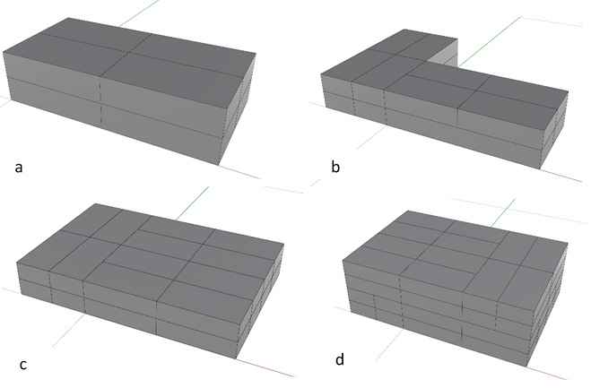
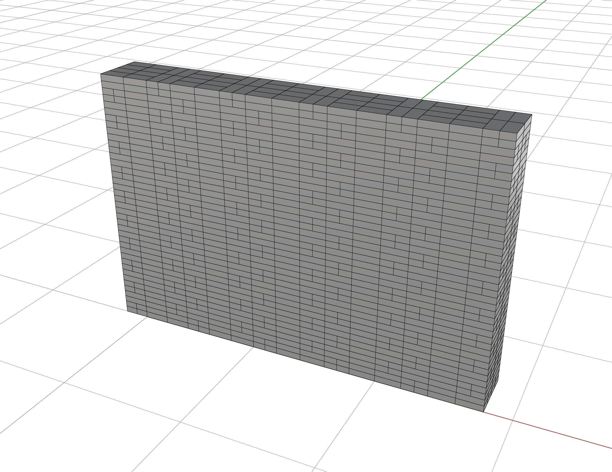
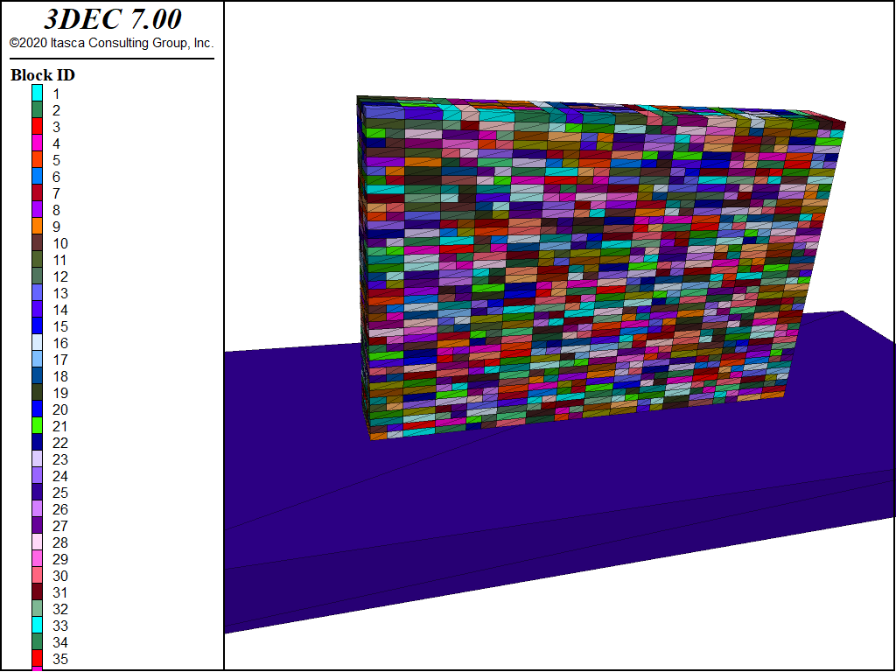
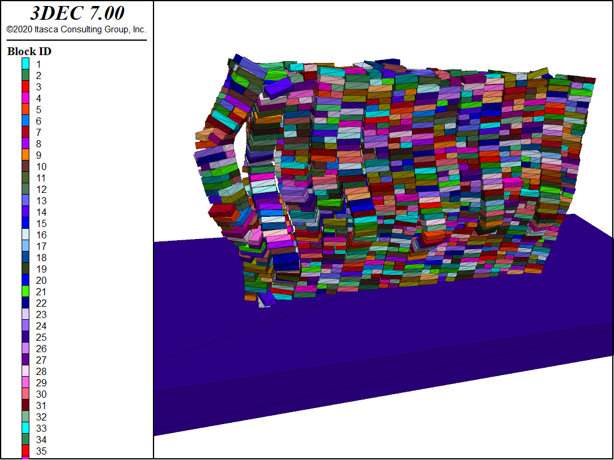

佛兰德砖墙
问题描述
注意
要在 3DEC 中查看此项目，请使用菜单命令 。选择“3DEC/ ExampleApplications/ FlemishWall”，然后选择“flemishwall.prj”进行加载。所用的数据文件FlemishWall.dat显示在本示例的末尾。
问题描述
本示例介绍如何在 Rhino（Robert McNeel and Associates，2020）中创建佛兰德砌合砖墙的模型。Rhino 模型保存为 VRML 格式，然后导入 3DEC。随后对墙体施加动力荷载。
在 Rhino 6 中构建模型
- 在 Rhino 中，使用 （角点、高度方式）创建一个 0.2 m x 0.1 m x 0.05 m 的砖块。
- 使用 创建墙体的 8 砖可重复模块（图 1（Figure 1）（a））。
- 使用 创建图 1（Figure 1）（b）中的几何。选择 后，将“Copy”改为“Yes”。然后选择左下角作为旋转中心，并输入角度 90。
- 复制原始 8 砖模块，创建图 1（Figure 1）（c）中的几何。
- 复制并平移 8 砖模块，创建如图图 1（Figure 1）（d）所示的另一层。此时便得到一个 48 砖的可重复模块。


图 1：创建佛兰德砌合墙体模块。
- 使用 Transform|Array → Rectangle，并采用以下参数创建完整的墙体（图 2（Figure 2））。
- x 方向数量：5
- y 方向数量：1
- z 方向数量：10
- x 方向间距：0.6
- z 方向间距：0.2


图 2：最终的墙体。
- 选中所有墙体砖块，然后选择 。当 Export 对话框打开时，将 VRML 选为“Save as”类型，并将文件名设为“wall.wrl”。
- 在“VRML Export options”窗口中，选择“version 2.0”；当“Polygon mesh detailed options”对话框打开时，除“Simple planes”外取消勾选所有选项，将除 Minimum edge length 之外的所有数值设为 0，而 Minimum edge length 应设为一个较大的数值（如 1000），然后单击“OK”。这将在你的工作文件夹中创建一个名为“wall.wrl”的文件。
- 启动 3DEC，并在你的工作目录中创建一个新项目。新建一个名为“FlemishWall.dat”的数据文件。添加 新建模型（
model new） 命令并配置为动力分析。使用 按 VRML 文件生成区块命令（:cmde:`block.generate.from-vrml`） 命令，从文件“wall.wrl”将块体导入 3DEC。本示例的完整数据文件如下所示。 - 添加 创建砖块命令（
block create brick） 命令以创建墙体的基础。 - 按图 3（Figure 3）所示绘制块体。
- 打开重力，赋属性，并对基础施加正弦平移运动以模拟地震。运行模型 0.5 秒的动力时间，你将看到墙体倒塌（图 4（Figure 4））。


图 3：3DEC 模型。


图 4：地震荷载作用 0.5 s 后的 3DEC 模型。
参考文献
Robert McNeel & Associates。Rhinoceros 6.0 版，Rhino3D 官网（https://www.rhino3d.com/）（2020）。
FlemishWall.dat
model new
model config dynamic
model large-strain on
block generate from-vrml filename 'wall.wrl'
block create brick -1.8 4.4 -1 1.4 -0.4 0
block property density 2400
block contact generate-subcontacts
block contact jmodel assign mohr
block contact property stiffness-normal 2e9 stiffness-shear 2e9 friction 40
block contact material-table default property stiffness-normal 2e9 stiffness-shear 2e9 friction 40
model gravity 0 0 -9.81
block fix range pos-z -0.4 0
block mech damp local 0.8
model solve
model save 'initial'
block gridpoint ini disp 0 0 0
block contact reset disp
model dynamic active on
block mech damp rayleigh 0 0
[freq = 5.0]
fish def cos_
cos_ = math.cos(2.0*math.pi*mech.time*freq)
end
fish def sin_
sin_ = math.sin(2.0*math.pi*mech.time*freq)
end
block apply vel-x 1 fish cos_ range pos-z -0.4 0
block apply vel-y 1 fish sin_ range pos-z -0.4 0
block apply vel-z 0.1 fish cos_ range pos-z -0.4 0
;源
block history vel-x pos -1.8 -1 -0.4
block history vel-z pos -1.8 -1 -0.4
block history vel-x pos 1.4 0 1
block history vel-z pos 1.4 0 1
block history disp-x pos 1.4 0 1
block history disp-z pos 1.4 0 1
model solve time 0.5
model save 'wall'
| 这些内容对您有帮助吗？… | FLAC3D © 2019, Itasca | 原文更新于 2020 年 10 月 8 日 |